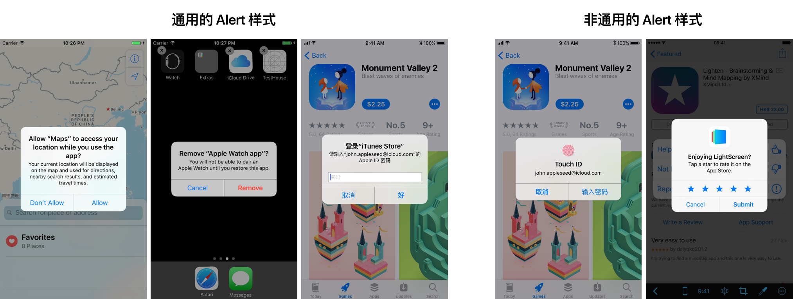

Apple 在 iOS Human Interface Guidelines 中提到了两种 View：Alert 和 Action Sheet。如果对 iOS 系统很熟悉的话，在各种 app 里都会看见这两种 View 的身影。两种 View 都会打断用户的操作，覆盖掉当前界面，在界面上以模态窗口的形式呈现，一般是向用户传达重要的信息并期望用户能够做出反馈。
初见 Alert 和 Action Sheet
通常的 Alert 由标题、描述、一个或一个以上的操作组成，还可能有文本输入框。Alert 会直接显示在界面的中央，必须点击某个操作后才能使其关闭，一般在 app 请求系统权限、确认删除某些内容、输入 Apple ID 等情景时会出现。当然也有一些特殊的 Alert 样式，比如 Touch ID 授权、iOS 10.3 才引入的在应用内评分。

Action Sheet 由标题、描述、一个或一个以上的操作组成，在 iPhone 上通常情况下在最底部还会有一个表示「取消」意义的操作。Action Sheet 在 iPhone 上是从底部滑出的一种形式，在 iPad 上是 Popover 的形式。它可以展示较多的操作，且在呈现形式上比 Alert 更圆滑一些，没有那么强硬，一般在一些用户主动操作之后才会出现。在系统里也发现了一个特殊定制化的 Action Sheet，就是音乐 app 里针对一首歌的操作。

从设计角度来说，Apple 定义了这两种 View 的具体规则，希望 iOS app 的设计师和开发者们都能遵从这套设计规范，这样一方面节省了设计成本，另一方面对于使用 app 的用户来说降低了学习成本，各个 app 的 Alert 和 ActionSheet 的操作逻辑是一样的，各个 iOS app 在不同中又有相同。
当然有的 app 认为原生的样式与自己 app 的设计风格不协调，加之有足够的设计&开发资源，于是根据自己 app 的设计风格设计了一套完全自定义的 Alert 和 Action Sheet。但万变不离其宗，以微信&微博举例，其操作逻辑与原生的是一模一样的，毕竟这样对于用户来说没有什么学习成本，用户也不会觉得很奇怪。

Apple 在设计上对两种 View 进行了规范，那具体在开发上又是怎么去服从这套设计规范的呢？从代码里还能看到这两种 View 的什么细节呢？
UIAlertController 是什么？
Apple 在设计规范中对 Alert 和 Action Sheet 进行了定义，这两种 View 其实也被从代码层级定义好了，使用时直接在 Xcode 中调用就可以。在 iOS 8 时代以前，要想展示 Alert 需要调用 UIAlertView ，想展示 Action Sheet 需要调用 UIActionSheet，且调用的逻辑较为复杂。自 iOS 8 之后，Apple 废弃了之前的调用方法，将上述两个统一成了 UIAlertController，具体呈现哪种样式，由属性「preferredStyle」来决定。
在使用时，整体的思路可以分为三步，1.定义 AlertController 本身，包括其标题、描述、是 Alert 还是 Action Sheet 等；2.定义在 AlertController 中要添加的动作，每个动作又有自己的属性，比如样式、显示文字、执行操作等；3.在页面上展示这个 AlertController。
下面用具体的例子分别说明下各种情景的 AlertController 应该怎么使用，且从这些代码的逻辑中发现那些没有在设计规范中说明的细节。
Alert 在代码中的实现
一个操作按钮的 Alert
最简单的 Alert 自然是只有一个操作按钮，以点击一个按钮弹出 Alert 为例说明：
@IBAction func showAlertViewWithOneAction(sender: UIButton){
// 创建 alertController，定义其显示的标题和描述文字，确定其类型为 Alert
let alertController = UIAlertController(title: "Hello World！", message: "This is the most simple alert view.", preferredStyle: UIAlertControllerStyle.alert)
// 定义要添加到 alertController 中的动作，包括每个动作的标题和样式
let okAction = UIAlertAction(title: "OK", style: .default, handler: nil)
// 向 alertController 中添加定义好的动作
alertController.addAction(okAction)
// 在界面上显示已经配置好的 alertController
self.present(alertController, animated: true, completion: nil)
}
对这段代码做一个简单的解析：
- 创建 alertController 时有一个属性「preferredStyle」，当其为「UIAlertControllerStyle.alert」时则为创建一个 Alert View，当其为「UIAlertControllerStyle.actionSheet」时则为创建一个 Action Sheet。
- 创建一个 action 时，它也有一个属性「style」，这个属性的值有三个：「.default」、「.destructive」、「.cancel」，他们之间有一些区别：
- 「.default」：默认的样式，视觉上是正常字重、蓝色的文字；
- 「.destructive」：从名字上就可以看出，用在那些具有破坏性、不可恢复的操作上，比如删除、注销、清除等，视觉上是正常字重、红色的文字；
- 「.cancel」：iOS 开发中特意择出来的一种样式，特别用在取消、不操作、仅关闭 Alert 的这种操作上，视觉上是半加粗（Semibold）的字重、蓝色的文字。 无论在 Alert Controller 中添加取消样式的动作排在第几个，在显示上都会放到所有操作的最后一个，只有两个操作时会放在左边，这是系统定义好的。注意一个 alertController 里只能有一个样式为「.cancel」的 action，如果代码中写了大于等于两个，app 会直接 crash。
- action 中的 handler 属性是用来描述点击这个操作后会发生的动作，一般情况下会写作一个闭包函数。而对于像取消这种操作，自然就是什么也不执行，即可写成「nil」。文章仅针对 UIAlertController 进行讨论，这部分就不展开详述了。
上面这段代码的运行效果如下图，这种只有一个操作按钮的 Alert 多用于提示/告知用户某些信息，起到一个通知的作用。

两个操作按钮的 Alert
当然如果想增加更多操作按钮，只需在代码中创建更多动作并添加到 alertController 即可。如下面的代码建立一个两个操作按钮的 AlertView：
@IBAction func showAlertViewWithTwoActions(sender: UIButton){
let alertController = UIAlertController(title: "你确定要退出当前登录帐号吗？", message: "退出后你的帐户数据不会清除，你可以再次登录", preferredStyle: .alert)
let exitAction = UIAlertAction(title: "退出", style: .default, handler: nil)
let cancelAciton = UIAlertAction(title: "取消", style: .cancel, handler: nil)
alertController.addAction(exitAction)
alertController.addAction(cancelAciton)
// 定义 alertController 中的哪个动作需要 highlight
alertController.preferredAction = alertController.actions[0]
self.present(alertController, animated: true, completion: nil)
}
下图是这段代码的运行效果。但这里有个问题，「取消」按钮并没有如期显示为半粗体字重，反而「退出」按钮显示为了半粗体字重。这个的原因是在代码里对创建的 alertController 的「preferredAction」属性进行了定义，将 alertController 里的第一个动作设置为了「preferredAction」，在显示效果上使这个 action highlight，也即应用了半粗体字重。因此原本使用了「.cancel」样式的操作按钮恢复成了正常字重。只能有一个动作可以被设置为「preferredAction」，且当设备有外接键盘时，按回车键等于直接点击这个操作。这个逻辑也是系统内置的。

在使用「preferredAction」这个属性时有几点需要注意，1.必须在创建完 alertController 且添加完动作后才能定义；2.这个属性只能应用于 Alert，不能应用于 Action Sheet。
三个操作按钮的 Alert
当一个 Alert 中出现了大于两个操作时，按钮的排布方式就不能再左右排布了，而是改为由上至下排布，具体代码如下：
@IBAction func showAlertViewWithThreeAcitons(sender: UIButton){
let alertController = UIAlertController(title: "你确定要注销此帐户吗？", message: nil, preferredStyle: .alert)
let destructAction = UIAlertAction(title: "注销帐户", style: .destructive, handler: nil)
let exitAction = UIAlertAction(title: "仅退出帐户", style: .default, handler: nil)
let cancelAction = UIAlertAction(title: "取消", style: .cancel, handler: nil)
alertController.addAction(destructAction)
alertController.addAction(exitAction)
alertController.addAction(cancelAction)
self.present(alertController, animated: true, completion: nil)
}
以上运行结果为下图，可以看到这个 Alert 只有标题，没有具体的描述信息，这个是被允许的。如果你代码写成只有描述，没有标题，系统会自动把描述作为标题；但如果你代码中标题和描述都没有，app 会 crash。如果只有标题和描述，但没有添加任何动作的 alertController 也是可以创建并显示的，但你无法关闭这个 alert。不过这个在实际中也不可能出现这种情况。

当一个 Alert 中有 n 个操作按钮时又会怎样呢？这个 Alert 会自动可上下滚动，并且打开时默认显示最下面的几个按钮操作。Alert 本身就是希望用户对某些操作做出判断并反馈的一个模态窗口，如果有太多的操作，会让用户感觉十分困惑，无法选择，而且交互体验也是非常差的，所以应极力避免这种情况。然而在 iOS 系统中，Airdrop 接收文件选择用什么 app 打开时就会出现这种情况，看上去十分糟糕🙃。

带文本输入框的 Alert
一个 Alert 中可以加入文本输入框以获取用户的某些信息，但文本输入框的数量、输入的字符量都应适度，在这么小一个窗口下输入文字的体验不会太好。系统中比较常见的就是购买 app 时输入 Apple ID 密码。以下以输入账户登录名和密码为例说明：
@IBAction func showAlertViewWithTextField(sender: UIButton){
let alertController = UIAlertController(title: "请输入你的帐户名和密码", message: nil, preferredStyle: .alert)
// 在 alertController 中增加两个文本输入框
alertController.addTextField(configurationHandler: {(textField: UITextField!) -> Void in
// 为文本输入框添加占位符，也即输入提示
textField.placeholder = "帐户名"
})
alertController.addTextField(configurationHandler: {(textField: UITextField!) -> Void in
textField.placeholder = "密码"
// 改变文本输入框的属性为安全输入模式
textField.isSecureTextEntry = true
})
let loginAction = UIAlertAction(title: "登录", style: .default, handler: {
(action:UIAlertAction!) -> Void in
let firstTextField = alertController.textFields![0] as UITextField
let secondTextField = alertController.textFields![1] as UITextField
print("Name \(String(describing: firstTextField.text)), Password \(String(describing: secondTextField.text))")
})
let cancelAction = UIAlertAction(title: "取消", style: .cancel, handler: nil)
alertController.addAction(loginAction)
alertController.addAction(cancelAction)
self.present(alertController, animated: true, completion: nil)
}
这段代码与之前的不同就是为创建的 alertController 增加了两个文本输入框。在第二个密码输入框中还用到了 textField 的「isSecureTextEntry」属性，当其值「true」时即为安全输入模式，一般用来输入密码。上面这段代码中还细化了点击「登录」按钮时的动作，系统会在控制台中以「Name XXX，Password XXX」的格式输出输入的帐户名和密码。下图是运行效果：

每个输入框中的文字属性可以自定义，但以默认为佳。另一般情况下这种帐户名+密码输入框会有一些字符判断，比如判断输入值不为空时，「登录」按钮才会可点击。Action 的「isEnabled」属性可以控制按钮是否可点击，「true」为可点击，「false」为不可点。
Alert 小结
从以上实例中小结一下发现的 Alert 的设计细节：
- Alert 必须要有标题，可以没有描述；只有描述没有标题时，描述会自动变为标题的样式；
- Alert 可以有一个或多个操作按钮，当大于两个按钮时会由上至下排列，过多时可以滚动；
- Alert 的每个操作有「默认」、「破坏」、「取消」三种样式，显示效果不同。一个 Alert 中只能有一个「取消」样式的操作，且会显示在所有操作之后；
- Alert 中有操作（只能有一个）被 highlight 时，「取消」样式的操作会恢复为与「默认」样式相同；
- Alert 中的操作可以被控制是否可点击；
- Alert 中可以添加文本输入框。
Action Sheet 在代码中的实现
通常情况下的 Action Sheet
通常情况下的 Action Sheet 包括其标题、描述、选择的动作和取消动作，以下为具体举例：
@IBAction func showActionSheetWithThreeActions(sender: UIButton){
let alertController = UIAlertController(title: "请选择你想要的语言", message: "选择的语言将在下次 app 打开时生效", preferredStyle: .actionSheet)
// 定义动作和添加动作到 alertController 两步可以合为一步
alertController.addAction(UIAlertAction(title: "中文简体", style: .default, handler: nil))
alertController.addAction(UIAlertAction(title: "中文繁体", style: .default, handler: nil))
alertController.addAction(UIAlertAction(title: "英语", style: .default, handler: nil))
alertController.addAction(UIAlertAction(title: "取消", style: .cancel, handler: nil))
// 设置在 iPad 上 Action Sheet 以 Popover 形式呈现时显示的位置
let popover = alertController.popoverPresentationController
if (popover != nil){
popover?.sourceView = sender
popover?.sourceRect = sender.bounds
}
self.present(alertController, animated: true, completion: nil)
}
说下与之前创建 Alert 时明显的几点不同：
- Alert 不管在 iPhone 上还是 iPad 上都会显示在屏幕中央，这个位置是系统已经确定好的，无需自己定义；但对于 Action Sheet 来说，在 iPhone 上会从屏幕底部滑出，但对于 iPad 来说要以 Popover 形式展现，就需要定义显示的位置。故上述代码中定义了在 iPad 显示的位置。还有一点，在 iPad 上取消样式的操作按钮是被自动隐藏的。
- 创建 Action Sheet 后，其中的操作是不可以自定义 highlight 的。
- Action Sheet 中是不能有文本输入框的。
与 Alert 相同的是：
- Action Sheet 的操作也是有三种样式，取消样式的操作会显示在最后，且取消样式操作只能有一个；
- Action Sheet 的操作过多时会支持滚动；
- Action Sheet 只有描述没有标题时，描述会自动变为标题的样式。
具体显示效果见下图。

需要注意的一点是，在显示创建的 alertController 时，「animated」也即是否有过渡动画一般设置为「true」显示。Alert 的过渡动画是一个渐现渐隐的过程，没有的话不会很突兀，但 Action Sheet 如果没有从下而上进入或从上而下退出的过渡动画就会感觉很突然。当然既然系统已经定义好了，两者都显示过渡动画是最好的。
没有「取消」操作的 Action Sheet
如果一个 Action Sheet 没有了「取消」样式的按钮会有什么特别呢？具体代码如下：
@IBAction func showActionSheetWithTwoActions(sender: UIButton){
let alertController = UIAlertController(title: nil, message: nil, preferredStyle: .actionSheet)
alertController.addAction(UIAlertAction(title: "新建网页", style: .default, handler: nil))
alertController.addAction(UIAlertAction(title: "关闭所有网页", style: .destructive, handler: nil))
self.present(alertController, animated: true, completion: nil)
}
显示效果见下图。与前面的 Action Sheet 对比就会发现，当一个 Action Sheet 有取消样式操作时，点击这个取消样式的操作按钮或者按页面空白处都可以关闭这个 Action Sheet；但当一个 Action Sheet 没有操作按钮时，点击空白处是没有任何作用的，必须点击操作按钮中的一个才能使其关闭。

对于 Action Sheet，标题和描述都是可以为空的，这也是与 Alert 不同的一个地方。
带有 icon 的 Action Sheet
99% 的原生 Action Sheet 的操作按钮上都只有文字没有 icon，但在 iOS 系统的系统功能中，在选择输出音频源时显示的 Action Sheet，出现了 icon，如下图。

这是一个非常特殊的例子。具体实现方式如下：
@IBAction func showActionSheetWithFourActions(sender: UIButton){
let alertController = UIAlertController(title: nil, message: nil, preferredStyle: .actionSheet)
let twitterAction = UIAlertAction(title: "Twitter", style: .default, handler: nil)
// 为这个动作添加一个 icon
twitterAction.setValue(UIImage(named:"twitter"), forKey: "image")
let spotifyAction = UIAlertAction(title: "Spotify", style: .default, handler: nil)
spotifyAction.setValue(UIImage(named:"spotify"), forKey: "image")
let pinterestAction = UIAlertAction(title: "Pinterest", style: .default, handler: nil)
pinterestAction.setValue(UIImage(named:"pinterest"), forKey: "image")
alertController.addAction(twitterAction)
alertController.addAction(spotifyAction)
alertController.addAction(pinterestAction)
alertController.addAction(UIAlertAction(title: "Cancel", style: .cancel, handler: nil))
self.present(alertController, animated: true, completion: nil)
}
上述代码运行效果如下图。可以看到添加的 icon 图片默认显示在了每个 action 的最左边，很难再进行进一步的自定义。在 Action Sheet 中显示 icon 不能说不可以，但这种在原生基础上对 AlertController 进行自定义，从设计上来说，一定程度上破坏了统一性。

Action Sheet 小结
从以上实例中小结一下发现的 Action Sheet 的设计细节：
- Action Sheet 可以既没有标题，又没有描述；只有描述没有标题时，描述会自动变为标题的样式；
- Action Sheet 可以有一个或多个操作按钮，过多时可以滚动，适配 iPad 时要定义在 iPad 上显示的位置，并以 Popover 的形式展现，且取消样式的操作按钮在 iPad 上是被自动隐藏的；
- Action Sheet 的每个操作有「默认」、「破坏」、「取消」三种样式，显示效果不同。一个 Alert 中只能有一个「取消」样式的操作，且会显示在所有操作之后；
- Action Sheet 有「取消」样式的操作按钮时，可以点击空白处关闭 Action Sheet；但当没有「取消」样式的操作按钮时，不可以点击空白处关闭；
- Action Sheet 中的操作不能被自定义 highlight ；
- Action Sheet 中的操作可以被控制是否可点击；
- Action Sheet 中不可以添加文本输入框；
- Action Sheet 的每个操作可以添加 icon，但不推荐。
自定义 AlertController ？
iOS 系统提供给了设计师和开发者定义好的 Alert 和 Action Sheet，那这两个 View 还能不能进一步进行自定义视觉显示样式呢？
如果直接回答，答案当然是能。上文中提到的给 action 添加 icon 其实就是一种。再比如改变字体颜色只需要在创建 UIAlertController 后改变其 view 的 「tintcolor」属性，代码如下：
@IBAction func showActionSheetWithTwoActions(sender: UIButton){
let alertController = UIAlertController(title: nil, message: "选择你想要的操作", preferredStyle: .actionSheet)
// 更改 alertController 的字体颜色
alertController.view.tintColor = UIColor.black
// 下面的代码同上文提到的没有「取消」操作的 Action Sheet，不再重复，以……表示
……
}
运行效果如下图，可以看到默认样式操作的字体已被改为黑色，但破坏样式的操作的字体颜色没有变化。

在 Apple 的 UIAlertController 开发文档 中有这样一段话：
The UIAlertController class is intended to be used as-is and does not support subclassing. The view hierarchy for this class is private and must not be modified.
故从 Apple 官网的角度来看，是完全不推荐或者说不允许自定义 UIAlertController 样式的。从设计角度来看亦是如此。原生定义的这两种 View 如果被任意的局部自定义，那么就会有各种奇形怪状的 Alert 和 Action Sheet 出现在用户面前，体验上差劲，整体性大打折扣。网络上有很多文章讲怎么自定义这两个 View 的某些样式，定义后的效果如下：🙄🙄🙄

个人觉得把这些自定义作为开发研究还好，但如果真应用于实际 app 中，就真的……如果觉得系统的原生 Alert 和 Action Sheet 不能满足自己的需求，还是建议重新设计一套有视觉规范的符合自己需求的 Alert 和 Action Sheet。
设计 Alert 和 Action Sheet 时还要注意什么
有关于 Alert 和 Action Sheet 的设计，Apple 在 iOS Human Interface Guidelines 中还提到了几点：
- Alert 会打断用户的当前操作，所以在显示 Alert 应该足够谨慎，只在非常必要时显示 Alert，并确保每个操作按钮的必要性和易读性，这样才能确保当真正发生问题时，一个 Alert 能够立即引起用户重视并作出正确的选择。
- 在横屏和竖屏下的 Alert 显示的标题、描述文本排列是不同的，在测试时应确保在两种角度下文本显示均是最优的。
- 在 Action Sheet 中，一个表示取消意义的「取消」按钮是十分有必要的，对用户的使用也是友好的。
- 确保 Action Sheet 中的破坏性操作始终在最上面显示。
以上就是从设计出发从设计和开发两方面去研究的 Alert 和 Action Sheet，也即 UIAlertController。希望可以帮助设计师更好的明白其中的诸多细节逻辑，帮助工程师更好的了解这两个 View 的作用。
如果你觉得这篇文章对你有所帮助，欢迎请我喝杯咖啡，感谢你的支持😁